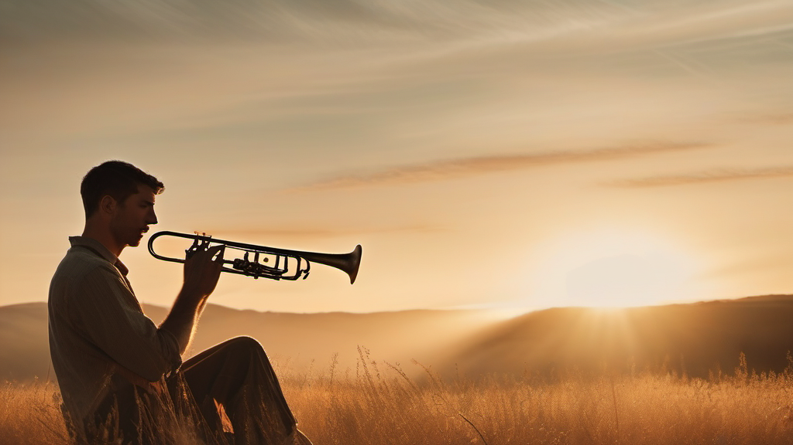

台灣潛水市場競爭日趨同質化——大多數教練在「課程數量、證照等級、器材品牌」上競爭，卻忽略了消費者真正的決策驅動力：恐懼與信任。楊教練 15 年的核心競爭優勢不在技術，而在他天生的「讓人安心」能力——這是極難複製的護城河，但目前仍是隱性資產。
他說「只要會呼吸就好了」——這五個字比任何課程介紹都更有說服力。
這是品牌最核心的素材：降低門檻、消除恐懼、邀請所有人入水。
清晰的訊息架構讓品牌在不同接觸點說同一件事，但在不同深度說。第一層打開感知、第二層建立信任、第三層促成行動。
三個受眾群不是平均分配資源——按優先序排列，第一群是「藍海主力」，第二群是「轉換主力」，第三群是「品牌傳播主力」。
楊教練的品牌聲音是「溫暖的引路人」——不是老師在講課，是朋友在相伴。以下是應說與不應說的具體對照，適用於所有對外文字。
五根內容支柱各有職責，按照比例分配，形成「吸引 → 教育 → 建立關係 → 促轉換 → 傳播」的完整飛輪。
品牌需要「招牌系列」——讓受眾在看到系列名稱時就知道值得打開。以下五個系列各有定位，可持續輸出且不重複。
你不需要成為「行銷人」。你只需要繼續做自己——然後讓我們幫你把這件事讓更多人看見。